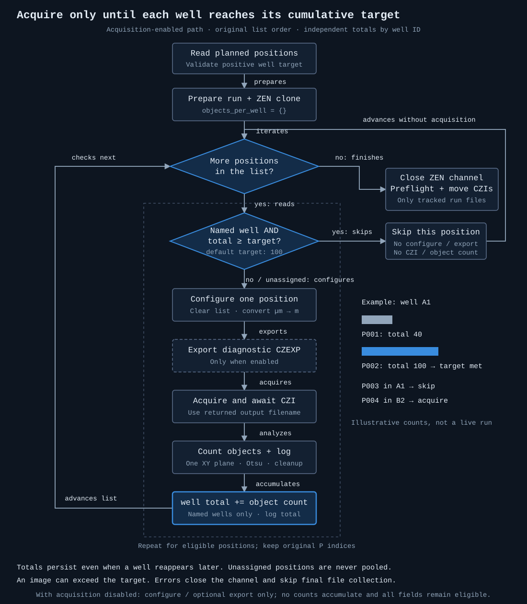

ZEN · acquisition + counting
One loop: acquire, accumulate,
skip completed wells.
Before configuring a position, check its well's cumulative count. At or above the target, skip it and advance through the original list.
Start with the positions stored in the experiment
Extract the position list offline before starting acquisition. The supplied output contains two fields in A1 and two in B2.
(base) PS F:\Pixi_Projects\zen_czi\smartmicroscopy>
pixi run --locked -e default python examples\control_zen_via_zenapi\extract_experiment_positions.py "C:\Users\m1srh\Documents\Carl Zeiss\ZEN\Documents\Experiment Setups\ZEN_API_Wellplate_Positionlist.czexp" --output results\experiment_positions.csv| Block | Scene | Well | Well index 0-based | Row 0-based | Column 0-based | Field | Position | X (µm) | Y (µm) | Z (µm) | Tile width µm | Tile height µm |
|---|---|---|---|---|---|---|---|---|---|---|---|---|
| 0 | 0 | A1 | 0 | 0 | 0 | 1 | P1 | 4500.000 | 7533.145 | −8000.000 | — | — |
| 0 | 1 | A1 | 0 | 0 | 0 | 2 | P2 | 4500.000 | 9466.855 | −8000.000 | — | — |
| 0 | 2 | B2 | 1 | 1 | 1 | 1 | P1 | 13500.000 | 16533.145 | −8000.000 | — | — |
| 0 | 3 | B2 | 1 | 1 | 1 | 2 | P2 | 13500.000 | 18466.855 | −8000.000 | — | — |
A1
Local P1 → global P001
Local P2 → global P002
B2
Local P1 → global P003
Local P2 → global P004
Coordinates are absolute stage positions in micrometers. Dashes indicate no tile dimensions. The terminal table rounds coordinates; the CSV retains full precision.
If A1 reaches the target at global P001, skip its P002 and continue with B2 at P003. The flow diagram below uses a separate illustrative position list and counts, not measurements from this extraction.
Apply the cumulative well target during acquisition

Open or download the standalone SVG · Full visual guide · Python source

This diagram describes the acquisition-enabled path. Diagnostic export remains optional; skipped fields produce neither snapshots nor images.